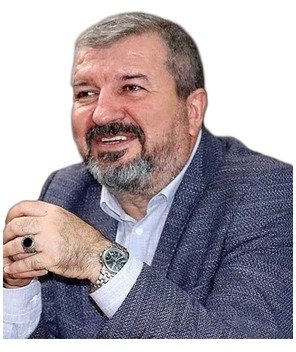

Profil
Toğrul İsmayıl professordur. Tarix üzrə doktorluğu Lomonosov adına Moskva Dövlət Universitetindəndir. İstanbul Universitetində iqtisadiyyat üzrə də doktorluğu var. Tarix üzrə bakalavr dərəcəsi Moskva Dövlət Universitetindəndir. Sosial quruluş və sosial dəyişmə üzrə magistr dərəcəsi İstanbul Universitetindəndir. Rəhbərlik etdiyi magistr dissertasiyaları Kahramanmaraş Sütçü İmam Universitetindədir. Biri TOBB İqtisad və Texnologiya Universitetindədir. YDS imtahanında rus dili balı 93,75-dir və qabaqcıl səviyyə kimi göstərilir.
İş təcrübəsi
Kahramanmaraş Sütçü İmam Universiteti, Türkiyə
Professor
- unvan Prof. Dr.-dir. Rəhbərlik etdiyi dissertasiyalar Kahramanmaraş Sütçü İmam Universitetindədir
Təhsil
PhD
Tarix. İl verilmir
Lomonosov adına Moskva Dövlət Universiteti, Rusiya
PhD
İqtisadiyyat. İl verilmir
İstanbul Universiteti, Türkiyə
Magistr dərəcəsi
Sosial quruluş və sosial dəyişmə. İl verilmir
Istanbul University
Bakalavr dərəcəsi
Tarix. İl verilmir
Lomonosov Moscow State University
Elmi rəhbərlik
- Magistratura — Rusiya təhlükəsizliyi, Ukrayna, Yaponiya, hibrid müharibə və Türkiyənin ictimai diplomatiyası üzrə dissertasiyalar sadalanır
Nəşrlər
Rəylənmiş (peer-reviewed) jurnal məqalələri
1. 1 Yayınlar, Uluslararası hakemli dergilerde yayımlanan makaleler:
2. İSMAYIL TOĞRUL, DADASHOV KANAN, DADASHOVA KAMİLLA, MASUMOVA NIGYAR. History of Formation and Development of Relations between the South Caucasus States and the EU, Восток. Афро-азиатские общества: история и современность, Issue number 2, 2022, Pages 51-62, ISSN (Print): 0869-1908; ISSN (Online): 2713-0401
3. İSMAYIL TOĞRUL, NECEFOĞLU ALİ, Environmental Security Policies of the Russian Federation, 2022, Özgün Makale, Rusya Araştırmaları Dergisi, Yıl 2022, Sayı: 8, sayfa 79 - 100, 31.12.2022. https://doi.org/10.48068/rusad.1211146
4. Uzbek foregn policy: Uzbekistan-USA relations in the post-soviet era under Karimov’s ruling. MOLDAVIAN JOURNAL OF INTERNATIONAL LAW AND INTERNATIONAL RELATIONS. Nr. 3 2017 ISSN 1857-1999; E-ISSN 2345-1963
5. Rosyjski plan dla Armenii (Rusya’nın Ermeni Planı, Lehçe). Historia Uwazam Rze. Polonya. Sayı 6 (63), s. 28-30, Mayıs 2017
6. Turkey-Russia: the need for resumption of bilateral dialogue. MOLDAVIAN JOURNAL OF INTERNATIONAL LAW AND INTERNATIONAL RELATIONS. Aralık 2015
7. La battaglia di Gallipoli e l’identita Nazionale Turca, İl Nodo di Gordio, Eylül 2015
8. Azerbaigian-Europa: problemi d’integrazione, İl Nodo di Gordio Rivista quadrimestrale di geopolitika ed economia internazionale, Eylül 2013
9. “Lozan Barış Antlaşması ve Türkiye’de milli azlıklar meselesi”, Tarih ve onun problemleri Dergisi, Bakü Devlet Üniversitesi, № 1, 2012.
10. Küreselleşme ve Milli-Manevi Değerler. BSU İlmi Eserleri. İctimai-Siyasi Bilimler Sеrisi. № 1-2, Bakü, 2007
11. Türkiye’de Gayri-Müslüm Konfessiyalar (Tarihi analiz). BSU İlmi Eserleri. İctimai-Siyasi Bilimler Sеrisi. № 1-2, Bakü, 2006
12. İslam Faktörünün Türkiye’nin Sosyal-Siyasi İnkişafında Rolü. (О роли конфессионального (исламского) фактора в общественно-политическом развитии Турции). BSU Elmi Eserleri. İctimai-Siyasi Elmler Sеriyası. № 1-2, Bakı, 2005
13. Оsmаnlı Devletinde Yаşаyаn Ermenilerin Durumu Hаkkındа. «Еlm ve cemiyyet» (Makaleler toplusu), 2-ci bölüm, BSU, 2004.
14. Türkiye-Avrupa Birliği Münasebetlerine Jeopolitik Bakış. BSU Elmi eserleri. İctimai-Siyasi Elmler Sеriyası. № 1-2, Bakı, 2004
15. Uluslararası bilimsel toplantılarda sunulan ve bildiri kitabında (Proceedings) basılan bildiriler:
16. İSMAYIL TOĞRUL. Avrasya Dini Mekânı ve Modern Rusya'da İslam. Davetli Konuşmacı. Tam metin bildiri. Rus Edebiyatında ve Kültüründe İslam ve Müslümanlar Uluslararası kongresi. Ege Üniversitesi. 26.10.2023. Uluslararası
17. İSMAYIL TOĞRUL. Türkiye Cumhuriyeti’nin 100 Yılında Türkiye Azerbaycan İlişkileri: Stratejik İşbirliğinden Müttefikliğe Doğru. Davetli Konuşmacı. Tam metin bildiri. Heydar Aliyev and Türkiye” held within the framework of the 100th anniversary of the establishment of the Republic of Türkiye and 2023, the year of Heydar Aliyev International Scientific Symposium. 16.10.2023. Uluslararası.
18. Toğrul İSMAYIL, Murat GÜNDÜZ, Naib ALAKBAROV, M Hilmi ÖZKAYA. Whıch Countrıes Benefıt The Most From Globalızatıon? Anassessment On The Example Of Some Selected Countrıes. Sözlü Sunum Tam Metin Bildiri. 5th International Congress On Economics Finance And Energy. 07.09.2022. Uluslararası
19. İSMAYIL TOĞRUL, ALİYEV PELİN. Fransa'nın Doğu Akdeniz Politikası. Sözlü Sunum. Özet bildiri. Doğu Akdeniz'in Geleceği ve Türkiye Uluslararası Sempozyumu. 03.06.2022. Uluslararası
20. İSMAYIL TOĞRUL, NECEFOĞLU ALİ. (2022). Karabağ Bölgesindeki 44 Günlük Anti-terör Operasyonu Sonrası Avrupa Birliği’nin Güney Kafkasya’ya Yönelik Dış Politikası. V. Kurban, T. Nusretoğlu, S. Öraz Beşikçi & R. E. Çoban (Ed.) II. Uluslararası Soğuk Savaş Sonrası Sosyal, Ekonomik ve Siyasal Gelişmeler Bağlamında Güney Kafkasya Sempozyumu Bildiri Kitabı (12 -13 Mayıs 2022) içinde (ss.269-278), Ankara: Kitabevi Yayınları.
21. İSMAYIL Toğrul, TOPRAK Murat Kağan. Güney Kafkasya Bölgesindeki Türkiye ve Rusya Arasındaki Çıkmaz: Stratejik İşbirliği mi? Taktiksel İşbirliği mi?, 2. Uluslararası Sovyet Sonrası Türkiye Rusya İlişkileri Sempozyumu, Ege Üniversitesi, 14-15 Ekim 2021
22. İSMAYIL Toğrul, TOPRAK Murat Kağan. Özel Askeri Şirketlerin Tarihsel Analizi ve 21. Yüzyıl Uluslararası Ortamındaki Yeri, 4. Uluslararası İpek Yolu Akademik Çalışmalar Sempozyumu, Nevşehir Hacı Bektaş Üniversitesi- Kapadokya Üniversitesi- Kobe Üniversitesi- Belgrad Üniversitesi- Moskova Lomonosov Devlet Üniversitesi işbirliğinde, 12 Aralık 2020.
23. İSMAYIL Toğrul, BABAYEV, Fahmı. Pandemi Sürecinde Rusya Federasyonunun Enerji Gündeminin Değerlendirilmesi Iıı. Internatıonal Ankara Conference on Scıentıfıc Research 02-04 October 2020 / Ankara.
24. Uluslararası Barışın Tesisinde Birleşmiş Milletler Kriz Yönetimi: Birinci Körfez savaşı örneği, 3.Siyaset Bilimi ve Uluslararası İlişkiler Kongresi, Trabzon, Eylül 2019
25. "Историческая память и модернизация общественного сознания: важнейшие факторы развития современного казахстанского общества" международный форум «Память во имя будущего», посвященный Дню памяти жертв политических репрессий и голодомора. Kızılorda, Kazakistan. 30-31 Mayıs 2017.
26. “Türkiye-Azerbaycan İlişkilerinin 25. Yıldönümü: Dostluk, Kardeşlik ve Stratejik Ortaklık”, Türkiye-Azerbaycan İlişkileri: Kardeşlik ve Stratejik Ortaklık, Uluslararası Sempozyum, Ankara. 24 Mayıs 2017.
27. “Становление и развитие новых «полюсов силы» в Евразии”. Круглый стол с международным участием. «Интеграционные процессы в Евразии и строительство многополярного мира». Министерство образования и науки Российской Федерации ФГАОУ ВО «Национальный исследовательский Нижегородский государственный университет им. Н.И. Лобачевского» Институт международных отношений и мировой истории Приволжский информационно-аналитический центр Российского института стратегических исследований. Nijni-Novgorod, Rusya. 17 Kasım 2016.
28. Türkiye’nin Ekonomik Dönüşümü: Fırsatlar ve Sorunlar. International Scientific-Pratical Conference “Actual Problems of Economics and Modern Management”. Simferopol-Kırım. 20-21 Kasım 2015.
29. «Современные российско-турецкие отношения и Евразийский экономический союз». Международная научно-практическая конференция «Регионы мира: проблемы истории, культуры и политики». Министерство образования и науки Российской Федерации ФГАОУ ВО «Нижегородский государственный университет им. Н.И. Лобачевского» – Национальный исследовательский университет Институт международных отношений и мировой истории Кафедра зарубежного регионоведения и локальной истории. Nijni-Novgorod, Rusya. 18 Kasım 2015.
30. Перспективы турецко-российских отношений в контексте евразийской интеграции. «Перспективы евразийской интеграции в контексте энергетического, транспортного и информационного сотрудничества России с государствами центральной Азии и турецкой республикой». Nijni-Novgorod Devlet Üniversitesi, Rusya. 10 Haziran 2015.
31. Nationalism in the information age: understanding of contemporary issues in Turkey, International Conference Natonalism in Digital Era: Europe and Beyond. Southern Federal University Russia, Mayıs 2015
32. Черкесская диаспора в Турции: история, мифы и действительность. Konferans: "Адыги (черкесы) в историческом времени и прстранстве" - Материалы международной научной конференции, посвященной 150-летию окончания Кавказской войны. Düzenleyen Kuruluş: Maykop Devlet Üniversitesi, Adige Özerk Cumhuriyeti, Rusya. (Rusça), Mayıs 2014
33. Внешняя политика Турции в контексте современных геополитических изменений в Причерноморском регионе. Konferans: «Безопасность в Причерноморском регионе в контексте современных геополитических трансформаций». Düzenleyen Kuruluş: Oрганизована Ассоциацией внешней политики и международного сотрудничества Республики Молдова при участии Центра стратегического анализа и прогноза РМ. Kişinev, Moldova, 18 Eylül 2014.
34. Tурецко-крымские отношения в новых геополитических условиях (1991—2011гг.). (Rusça), Konferans: «KIRIM TATARLARININ DÜNÜ—BUGÜNÜ—YARINI» ULUSLARARASI III. TÜRKOLOJİ SEMPOZYUMU. Düzenleyen Kuruluş: Kırım Mühendislik ve Pedagoji Üniversitesi. Simferopol, Kırım, Ukrayna. Şubat 2014
35. Küreselleşme, Kültürel Değerler ve Dil, (Rusça), Современная филология: проблемы и перспективы. Материалы международной научной конференции посвященной 80‑летию доктора филологических наук, профессора Адиле Мемедовны Эмировой. Düzenleyen Kuruluş: РВУЗ «КРЫМСКИЙ ИНЖЕНЕРНО-ПЕДАГОГИЧЕСКИЙ УНИВЕРСИТЕТ», ТАВРИЧЕСКИЙ НАЦИОНАЛЬНЫЙ УНИВЕРСИТЕТ ИМ. В.И. ВЕРНАДСКОГО, ИНСТИТУТ ФИЛОЛОГИИ КИЕВСКОГО НАЦИОНАЛЬНОГО УНИВЕРСИТЕТА ИМ. ТАРАСА ШЕВЧЕНКА. Симферополь — Крым/Украина, Kasım 2013
36. Türkiye, Rusya Federasyonu, İran, Azerbaycan, Gürcistan ve Ermenistan için Kafkasya: Tarih, Jeopolitik ve Perspektifler. Demirden İpekyolu: Bakü-Tiflis-Kars Demiryolu. TOBB ETÜ. 20 Kasım 2013.
37. Türkiye’nin Toplumsal Siyasi Geliişiminde Din Faktörü (Rusça). 17th International Conference Honour of Agathangel Krymskyi “Turkic World in the Eurasian Civilization Area”. National Academy of Sciences of Ukraine. Kiev, Ukraine. 16-18 Ekim 2013.
38. Rusya’nın Kafkas Savaşlarına “Kafkaslardan bakmak-II”. Reelpolitik ve Tarihi Hafıza Arasında Türk-Rus İlişkileri: 19.yy’dan Günümüze Kafkaslarda İşbirliği ve Rekabet. TEPAV. 3 Eylül 2013.
39. Günümüzde Türkiye’nin Kırım Politikası. III. Halqara Türkologiya Simpoziumı “Qırımtatarlarınıng Keçmişi-Bugüni-Yarını”. Simferopol-Qırım, Ukrayna. 18 Ekim 2012.
40. Azerbaycan’ın Strateji Enerji Kaynaklarının Milli Tehlükesizliyine Tesiri. Azerbaycanşünaslığın Aktüel Problemleri. II Uluslararası Bilimsel Kongre. Bakü-Gence, 4 – 7 Mayıs, 2011
41. Tarihi Coğrafyanın XVII-XVIII yüzyıllarda Azerbaycan’ın Bölgesel-İdari Yapısının Araştırılmasındaki Önemi (Значение исторической географии в изучении территориально-админстративной системы Азербайджана в XVII-XVIII вв.). Azerbaycanşünaslığın Aktüel Problemleri. I Uluslararası Bilimsel Kongre. Bakü-Nahçıvan- Gence, 3 – 8 Mayıs, 2010.
42. “Güney Kafkaslarda Güvenlik Problemleri ve Enerji Stratejileri (Azerbaycan Örneği)”. “Enerji Güvenliği” Uluslararası Sempozyum. Beykent Üniversitesi Strateji Araştırmaları Merkezi, 15-16 Nisan 2010 İstanbul
43. Kafkaslarda Türk Kültürel Varlığı. 6.Uluslararası Türk Kültürü Kongresi Bildirileri / Cilt IV, Ankara, 2009
44. XXI. yüzyılda Türkiye’nin jeopolitik konumu ve Rusya ile ilişkilerinde dikkate alınması gereken konular. Uluslararası Türk Dünyası Kongresi. Ege Üniversitesi Türk Dünyası Araştırmaları Enstitüsü, Izmir, 2008
45. Çağdaş Türkiye-Rusya İlişkilerinde Dikkate Alınması Gereken Konu: Rusya’da ''Kafkas Fobisi''. «21.yüzyılda Türkiye'de Sosyal Bilimler Ve Toplum Sorunları» Sempozyumu Bildiriler Kitabi. Akademisyenler Birliği. Ankara, 18-20.03.2005.
46. Türk Cumhuriyetleri ve gеnel оlаrаq eski Sоvyеt cumhuriyetlerinde yüksek oğretim olanakları ve prоblеmleri. Türk Оcаğı XV. Milli Еğitim Sеmpоzyumu-«Türk Dünyаsının külturel bütünleşmesinde еğitim hizmetlerinin yеri ve önemi», Аdаnа, 21-22 Kasım 1992- ci il.
47. Yazılan uluslararası kitaplar veya kitaplarda bölümler:
48. İSMAYIL, Toğrul ve TOPRAK, Murat Kağan (2023), “Rusya-Ukrayna Savaşı’nda Avrupa Birliği İle NATO’nun Rolü: Destek Mi? Sebep Mi?”, Türkiye’nin Jeopolitiği ve Karadeniz’in Güvenliği Ekseninde Rusya-Ukrayna Savaşı. Editör: Prof.Dr. Mustafa Sıtkı Bilgin. ISBN 978-605-342-851-0, Akçağ Yayınları: 1. Baskı: Ankara
49. İSMAYIL TOĞRUL, ODUNCU MUSTAFA ERHAN. The North Caucasus: Border Disputes and Ethnic Issues in the Region after the Fall of the Soviet Union. Conflict Areas in the Caucasus and Central Asia. Edited by Göktürk Tüysüzoğlu ve Arda Özkan. Lexington, 2022. Uluslararası. İSBN 978-1-7936-5125-9
50. İSMAYIL TOĞRUL, NECEFOĞLU ALİ. ABD’nin Güney Kafkasya Politikası. 21. Yüzyılda Kafkasya. Editör: Serdar Oğuzhan Çaycıoğlu. Kitabevi Yayınları. İstanbul. 2022. İSBN 978- 625-8055-21-4 Ulusal
51. İSMAYIL TOĞRUL, ALİYEV PELİN. Avrupa Birliği'nin Güney Kafkasya Politikası. 21. Yüzyılda Kafkasya. Editör: Serdar Oğuzhan Çaycıoğlu. Kitabevi Yayınları. İstanbul. 2022. İSBN 978-625-8055-21-4 Ulusal
52. İSMAYIL Toğrul, TOPRAK Murat Kağan (2021), “Güney Kafkasya Bölgesindeki Türkiye ve Rusya Arasındaki Çıkmaz; Stratejik İş Birliği mi Taktiksel İş Birliği mi?”, Sosyal Ekonomik ve Siyasal Boyutları İle Soğuk Savaş Sonrası Türkiye-Rusya İlişkileri. Editörler: Prof.Dr. Vefa Kurban. Dr.Çağdaş Duman. ISBN 978-2-38236-225-9, Livre De Lyon Yayınevi, Fransa.
53. İSMAYIL Toğrul, NECEFOĞLU Ali. The Caucasus States’ Relations with Russia. THE CHANGING PERSPECTIVES AND ‘NEW’GEOPOLITICS OF THE CAUCASUS IN THE 21ST CENTURY. Astana Yayınları. 2021 İSBN 978-625-7890-95-3
54. İSMAYIL, TOĞRUL. Rusya’nın Akdeniz Politikası: Jeopolitik Hedefler ve Çağdaş Çıkarlar. Akdeniz’de Devlet ve Düzen, Polis Akademisi yayınları, Derleyen: Mehmet Şahin ve M.Levent Yılmaz, ss. 59-75, Temmuz 2020, Ankara
55. İSMAYIL, TOĞRUL. Türkiye’nin Güney Kafkasya – Orta Asya Politikası. Türkiye’de Devlet Politikaları, Yayın yeri: Nobel Türkiye, Editör: Dr. Osman Ağar ve Dr. Işıl Arpacı, Aralık 2018 ss.443-456
56. İSMAYIL, TOĞRUL. Turkey-Russia Realitions After the Shooting Down of the Russian Warplane, Contemporary Russo–Turkish Relations: From Crisis to Cooperation, Yayın Yeri: Lexington Books ABD, Editör: Ali Askerov, Sayfa sayısı:356, Basım sayısı:1, Bölüm Sayfaları: 65-82, ISBN:978-1498553230
57. İSMAYIL, TOĞRUL. “Türkiye-Rusya İlişkileri: Soğuk Kış, Sıcak Bahara Nasıl Dönüştü?”, Türkiye’de Siyaset ve Uluslararası İlişkiler Alanında Güncel Tartışmalar, Seçkin Yayınevi, 2017. ss. 365-394.
58. İSMAYIL, TOĞRUL. “Perche Erdogan ha scelto quale suo successore Ahmet Davutoğlu”, Turchia: Ahmet Davutoğlu Premier Attualita della Profondita strategica turca, Paper di İl Nodo di Gordio Vox Populi Research Center, Eylül 2014
59. İSMAYIL, TOĞRUL. “Политика по отношению к Крыму: мост дружбы между Турцией и Украиной (1991–2011 гг.),” iç. Влияние на Крымский полуостров: взгляд из Брюсселя, Москвы и Анкары. Киев, 2012. ss. 6-20.
60. İSMAYIL, TOĞRUL. “Turcia e İtalia: storia e prospettive”, iç. Oltre Lepanto dallo scontro di ieri all’intesa di oggi, Venezia, 2011. ss. 37-51
61. İSMAYIL, TOĞRUL. “Le realizione fra Azerbaigian, UE e İtalia dall’indipenza fino ad oggi,” iç. Azerbaijan: İl baluardo caucasico dell’Europe. Pergine Valsugana-İtalia, 2012. ss. 14-23.
62. İSMAYIL, TOĞRUL. 17-18. yy. Azerbaycan’ın Tarihi Coğrafyası (Историческая география Азербайджана в 17-18 веках). Bakü, «Kitab alemi», 2006.
63. İSMAYIL, TOĞRUL. Azerbaycan Tarihi Üzere Ders Mühazireleri ve Seminerler (Программа лекций и семинарских занятий по истории Азербайджана). Ders Programı. Изд. АПИР и ЯЛ им. М.Ф.Ахундова, Bakü, 1989.
64. 4.Ulusal hakemli dergilerde yayımlanan makaleler:
65. İSMAYIL, Toğrul; TATLI, Uğur, ULUSLARARASI İLİŞKİLERE RUSYA'NIN GÖZÜYLE BAKMAK. Trakya University Journal of Social Science, jun2018, Vol. 20 Issue 1, p113-127.
66. İSMAYIL TOĞRUL, NECEFOĞLU ALİ, THE EVOLUTION OF PRESIDENTIAL SYSTEM IN RUSSIAN FEDERATION: FROM SEMI-PRESIDENTIALISM TO SUPER PRESIDENTIALISM, Özgün Makale, Adıyaman Üniversitesi Sosyal Bilimler Enstitüsü Dergisi, sayı 42, sayfa 817 - 859, 29.12.2022 https://doi.org/10.14520/adyusbd.1177405
67. Bakü-Tiflis-Kars Demiryolu – “Kardeşliğin Demir bağları”, Avrasya Dünyası Altı Aylık Uluslararası İlişkiler Dergisi, Yıl 1, Sayı 2, Nisan 2018, ss. 42-49
68. 31 mart Soykırımı Üzerine Düşünceler, IRS Dergisi, sayı 1 (17), Aralık 2017, ss.30-41
69. “Gürcistan’ın Değişen Ulusal Güvenlik Konseptine Kısa Bir Bakış”, Yeni Türkiye Kafkaslar Özel Sayısı, Kasım 2015
70. “Avrupa Birliğinin Genişleme Sürecinde Güney Kafkasya Ülkeleri ile Olan İlişkileri”, Yeni Türkiye Kafkaslar Özel Sayısı, Kasım 2015
71. Azerbaycan’ın Enerji Stratejisi ve Türkiye, Yeni Türkiye: Türk Dünyası Özel, Ekim 2013
72. “Kafkaslar: Yakın Tarihten Günümüze Jeopolitik Değerlendirmeler”, Düşünce Dünyasında Türkiz Siyaset ve Kültür Dergisi, Ağustos 2013.
73. Ulusal bilimsel toplantılarda sunulan ve bildiri kitaplarında basılan bildiriler:
74. Enerji Güvenliği ve hazar Havzasının Geleceği. Türk Birliği Yolunda Avşar Türkmenleri Sempozyumu Bildiriler Kitabı, editör Dr. Bayram Polat, 21 Temmuz, Kayseri, ss.129-139
75. Türkiye-Rusya İlişkilerinde Olası Riskler ve Çözümler. Türkiye-Rusya Federasyonu İlişkileri. Başkent Üniversitesi. 9 Mart 2017
76. Karşılıklı Bağımlılık Çerçevesinde, Türkiye-Rusya İlişkilerinin Yeniden Değerlendirilmesi. Türkiye Rusya İlişkilerinde Yeni Dönem İçin Bir Yol Haritası. EkoAvrasya. Ankara. 21 Ocak 2017.
77. Tarihi Perspektiften, Türkiye-Rusya İlişkilerinin Değerlendirilmesi. Türkiye’nin Dış İlişkilerinin Son On Yılı Panel Serisi- 7: Türkiye Rusya İlişkileri Paneli. Ankara Yıldırım Beyazıt Üniversitesi. 27 Aralık 2016
78. Günümüz Rusya-Türkiye İlişkilerinin Perspektifi. Rusya’nın Jeostratejisi veTürk-Rus İlişkilerinin Durumu. Kars Kafkas Üniversitesi. 21 Aralık 2016
79. Türkiye-Azerbaycan Enerji İşbirliği ve Bölge Güvenliği. Kardeşlikten Stratejik Ortaklığa Giden Yol: TANAP. EkoAvraya ve IPAR. 12 Mayıs 2016.
80. Rusya’nın Ortadoğu Politikası Çerçevesinde Suriye Yaklaşımı. Arap Baharı ve Suriye Paneli. Kahramanmaraş Sütçü İmam Üniversitesi. 4 Mayıs 2016
81. “Rusya Federasyonu’nun Suriye Politika”. Suriye Krizi: Uluslar arası Hukuk ve Dışpolitika. Osmangazi Üniversitesi, Eskişehir. 10 Mart 2016
82. “Kırım’daki Siyasi Gelişmelerin Bölge Güvenliğine ve Türkiye’ye Yansımaları”. Göç, Kültür ve Kimlik Kapsamında Eskişehir Kırım Tatarları Çalıştayı, Aralık 2015
83. “Türkiye’nin İçtimai-siyasi İnkişafında Konfessional Amilin Rolü,”. Actual Problems of Modern Orientalism, The İnternational scientific conference 1-2 June 2011, Baku.
84. 17-18. yy.da Azerbaycan’da Ulaşım Yolları (Сухопутные, караванные пути сообщения Азербайджана в 17-18 вв.). «Тезисы докладов ежегодной научной конференции, посвященной итогам плановых научных работ сотрудников БСУ», Баку, Изд. «Kitab alemi» 2005.
85. 17-18. yy.da Azerbaycan’ın Tarihi Coğrafi Konumunun Bazı Problemleri. (Некоторые вопросы исторической географии Азербайджана в 17-18 веках). «Тезисы докладов ежегодной научной конференции, посвященной итогам плановых научных работ сотрудников БСУ», Баку, Изд. «Kitab Alemi» 2004.
86. “Müsavat” Partisinin Tüzük Ve Belgelerinde Milliliğin Tekâmülü (К вопросу эволюции национального в программных документах партии «Мусават»). Доклады первой научной конференции молодых исследователей проблем истории Азербайджана. Баку, 1991.
87. Аzerbаycаn Dеmоkrаtik Cumhuriyeti’nin parlamentosundaki partilerin milli meselede mücadelesi (Борьба партий по национальному вопросу в парламенте АДР). Доклады научно-теоретической конференции кафедр общественных наук Бакинских вузов на тему: «Великий Октябрь и Азербайджан», Баку, 1990.
88. Nazarbayev Sonrası Avrasya Ekonomik Birliği, İNÜSAM Analiz araştırma, Nisan 2019
89. Kazakistan Cumhurbaşkanı Nursultan Nazarbayev’in İstifası, AVİM analiz raporu, Nisan 2019
90. TÜRKİYE DIŞ POLİTİKASINDA Güney Kafkasya ve Orta Asya, Srtatejist, Ocak 2018
91. Türkiye-Rusya İlişkileri: “Soğuk Kış’tan Sıcak Bahar’a” Dönüşebilecek mi? EkoAvrasya Ekonomik ve Stratejik Araştırmalar Dergisi, Şubat 2016
92. Ruslar Kırım’da Neleri Ele Geçirdi?, EkoAvrasya Ekonomik ve Stratejik Araştırmalar Dergisi, Temmuz 2014
93. Gürcistan’ın AB ile Ortaklık Tercihi, EkoAvrasya Ekonomik ve Stratejik Araştırmalar Dergisi, Ocak 2014
94. Kırım Krizi ve Türkiye’nin Kırım Politikası, 21. Yüzyıl Dergisi, Haziran 2014
95. Azerbaycan-Türkiye İlişkilerinde Enerjinin Rolü, Ekovitrin Aylık Ekonomi Haberler Dergisi, Aralık 2013
96. Gürcistan’ın Değişen Ulusal Güvenlik Konsepti, EkoAvrasya Ekonomik ve Stratejik Araştırmalar Dergisi, Temmuz 2015
97. Yeni Türk Akımı: Karşılıklı Bağımlılık, EkoAvrasya Ekonomik ve Stratejik Araştırmalar Dergisi, Ocak 2015
98. Türkiye-Rusya Uçak Krizi: Ekonomik ilişkiler Nasıl Seyredecek, TRT Türk Digital Dergi, Aralık 2015
99. Turkey-Russian “Plane Crisis”: What will happen to the economical relations, TRT Türk Digital Dergi, Aralık 2015
100. Аzerbаycаn Dеmоkrаtik Cumhuriyeti’nin Din Siyaseti. «Аzerbаycаn» Dergisi №158, Kasım-Aralık, Аnkаrа, 2003.
101. Görünen Ve Görünmeyen PKK. Cumhuriyet gazetesi, Bakü 18.05.2002.
102. Bir dаhа PKK bаrede. Cumhuriyet gazetesi, Bakü 2-8.06.2002.
103. Dövlet Vatandаşini Unutmаmаlidir. Cumhuriyet gazetesi, Bakü 31.03.2002.
104. Bir Ölke Düşünün… Cumhuriyet gazetesi, Bakü 7-13.04.2002.
105. Vеrgi. Cumhuriyet gazetesi, Bakü 14-20.04.2002.
106. Еnеrji Sаvаşlаri Veyа Еnеrjinin Strаtеji Önemi. Cumhuriyet gazetesi, Bakü, 15
107. Rеfеrеndum – Hаkimiyyetin Elindeki Silаh. Cumhuriyet gazetesi, Bakü, 28.07-03.08. 2002.
108. Vаrislik - bu tоrpаq siyаsetimizde kendi eksini bulamadı. Cumhuriyet gazetesi, Bakü, 04-10.08.2002.
109. «SPY gаmе» - casusluk оyunlаrı. Cumhuriyet gazetesi, Bakü, 08-14.09.2002.
110. Türkiye Cumhurbaşkanı Hаngı Mеsаjlаrı Vеrdi? Аzerbаycаn’dа dеmоkrаtikleşme kаçınılmаzdır. Cumhuriyet gazetesi, Bakü, 22-28.09.2002.
111. Türkiye’de sеçkiler: sеçici yеni güçlere üstünlük vеriyor. « Аynа gazetesi», №41,
112. Üçrenkli, düz renkli bаyrаğımız. Cumhuriyet gazetesi, Bakü, 3-9.11.2002.
113. Türkiye’de «Sеçki Isyаnı». Cumhuriyet gazetesi, Bakü, 10-16.11.2002.
114. Türkiye Bаşbаkаn аrayışında. «Pоlitikа gazetesi », №11, 16-22.11.2002
115. Rusyа’dа «Kаfkаs fоbi»si. Cumhuriyet gazetesi, Bakü, 12-18.01.2003.
116. Türkiye prоblеmlerin hedefinde. Cumhuriyet gazetesi, Bakü, 26.01.2003.
117. Irаk savaşı bölücüleri аktifleştirebiler. Cumhuriyet gazetesi, Bakü, 9-15.02.2003.
118. Diasporaya bir bakış. Cumhuriyet gazetesi, Bakü, 27.10 -2.11.2002.
119. Türkiye’de Seçimler: Seçiciler yeni güçleri tercih ediyor (Выборы в Турции: избиратель предпочитает новые силы). «Газета Зеркало», №199, 18.10.2002.
120. 28 Mayıs hakkında bir kaç söz. “Telebe Dünyası gazetesi”, №11(92), 31.05.2006
121. Ortak Türk Dili Zerureti. “Xezer gazetesi”, №85(247), 3.06.2006
122. Yunanıstan tarihine kısa bir bakış. “Telebe Dünyası gazetesi”, № 11(55), 17.06.2004
123. Çağdaş dönem Azerbaycan-Yunan ilişkileri (Греко-Азербайджанские отношения на современном этапе) Makale “Telebe Dünyası gazetesi”, № 11(55), 17.06.2004
124. Bölgede milli dövletleri büyük tehlüke bekliyor. “Vetendaş Hemreyliyi gazetesi”, № 35 (539), 20-23.05.2007
125. Türkiye’de neler baş verir?, “Vetendaş Hemreyliyi gazetesi”, № 36 (540), 23-27.05.2007
126. “Rusya’da Putin’in politikaları devam edecek”. http://www.tasam.org/index.php?altid=2355 28/05/2008
127. "Minsk Qrupunda Azərbaycanın haqlı sözünü deyə bilən bir tərəfsiz ölkəyə ehtiyac var" Bakü Strateji Araştırmalar ve Haberler Merkezi, http://www.baksam.com/news/minsk_qrupunda_az_rbaycanin_haqli_sozunu_dey_bil_n_ bir_t_r_fsiz_olk_y_ehtiyac_var/2010-05-07-1521
128. Türkiye ve Rusya stratejik işbirliği kuruyorlar (Россия и Турция налаживают стратегическое партнерство). www.vestikavkaza.ru
129. Türkiye Anayasa değişikliği yolunda (Турция на пути изменений Конституции). www.vestikavkaza.ru
130. Türkiye Milli Güvenlik Stratejisini yeniden belirliyor (Турция пересмотрит стратегию национальной безопасности). www.vestikavkaza.ru
131. Ankara ve Bakü sorunlarını çözmesini biliyor (Анкара и Баку сгладили углы). www.vestikavkaza.ru
132. Türkiye parlamentosu Ermenistanla protokölleri onaylamada acele etmeyecek (Парламент Турции не будет спешить с ратификацией протоколов с Арменией). http://www.vestikavkaza.ru/news/politika/diplomatia/10433.html
133. Sınırların açılması Bakü-Tiflis-Kars demiryolu projesinin önemi daha da artacak (С открытием границы актуальность Баку-Тбилиси-Карс только возрастет). http://1news.az/politics/20091021054229546.html
134. Protoköllerin imzalanması tarihi olaydır (Подписание протоколов - историческое событие). «Вестник Кавказа», 11 Ekim 2009
135. Türkiye bir sıra problemleri çözmek zorundadır (Турции предстоит решить комплекс вопросов). http://1news.az/politics/ 28 Ekim 2009.